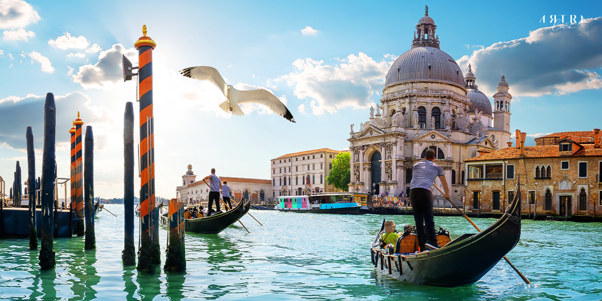

อิตาลี ||
ประวัติประเทศอิตาลี ||
อาหารที่ชอบ ||
สถานที่ท่องเที่ยวในอิตาลี ||
ประวัติประเทศอิตาลี ประวัติเศรษฐกิจ VIDEO
ประวัติการเมือง การปกครอง ประธานาธิบดี นายกรัฐมนตรี รัฐมนตรีว่าการกระทรวงการต่างประเทศ รัฐสภา การปกครองส่วนท้องถิ่น